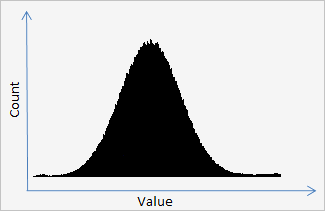

Unit: DeLaFitsGraphics
Type: property
Visibility: public
Member Of: TGraphicColor
property Histogram: PHistogram read GetHistogram;
Description:
Histogram of physical values of data (pixels) of the frame.
TGraphicColor.HistogramMeasure.CountItems contains the current number of elements of the histogram (rank). The number of elements of the histogram is not more than 50.000.
When you create an object TFitsGraphic the histogram is not built at once. The histogram is automatically created when the first call a method TFitsGraphic.GraphicRead, or user can create the histogram a manually by a method HistogramUpdate.
Code Sample:
var
Fit: TFitsGraphic;
I: Integer;
Histogram: PHistogram;
HistogramItemsCount: Integer;
HistogramItem: PHistogramItem;
begin
// open file for read
Fit := TFitsGraphic.CreateJoin(TFileStream.Create('some.fit', cFileRead));
// we will create the histogram if it isn't created yet
if not Fit.GraphicColor.HistogramIsMake then
Fit.GraphicColor.HistogramUpdate;
// get pointer a histogram
Histogram := Fit.GraphicColor.Histogram;
// get count of items of histogram
HistogramItemsCount := Fit.GraphicColor.HistogramMeasure.CountItems;
// enumerate the items of histogram and draw it
for I := 0 to HistogramItemsCount - 1 do
begin
HistogramItem := Histogram^[I];
YourProcDrawHistogram(I, HistogramItem^.Count, HistogramItem^.Value);
end;
// free
Fit.Stream.Free;
Fit.Free;
end;
Output

See Also:
—
Created with the Personal Edition of HelpNDoc: Generate Kindle eBooks with ease
Copyright © 2013-2016, Evgeniy Dikov
Support: delafits.library@gmail.com
Sources: https://github.com/felleroff/delafits